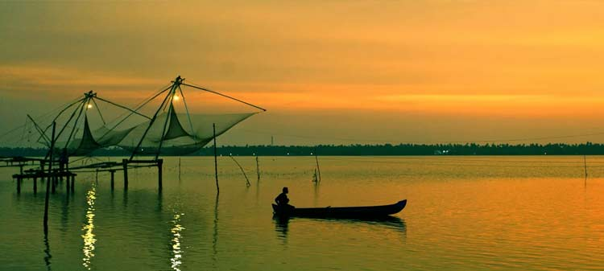

Ernakulam
Sprawling, residential Ernakulam is known for Marine Drive, a busy waterfront promenade where boats offer backwater cruises. The Kerala Folklore and Hill Palace museums explore local heritage through art and antiquities. Shops along Broadway and on MG Road sell fabrics, crafts, and spices, while modern Lulu Mall also has a cinema and an ice rink. Simple eateries serve Keralan specialties and South Indian seafood. ― Google
Area: 3,032 km²
Elevation: 4 m
District: Ernakulam
Weather: 27 °C, Wind S at 3 km/h, 75% Humidity weather.com
Area code: 0484
District : Emakulam
Location : Ernakulam in Kerala, 220 km from Trivandrum
Known As : Lagoon's Country.
Best Time to Visit : Post Monsoon, September to May.
To See
: Fort Kochi and Mattancherry, Santa Cruz Basilica, Princess Street, St. Francis Church, Vasco da Gama Square, Dutch Cemetery, Cochin Carnival.
Most Famous For Don't Miss
: Fishes, Prawns that are the famous Taste Buds of Cochin.
Must Experience
: Fishing with Chinese Fishing Nets a huge Cantilevered Fishing Net.
Around
: Veegaland 24 km, North Paravur 48 km, Kaladi 45 km, Kodanad – 45 km, Bhootathankettu – 50 km, Malayattur – 47 kms, Pazhur – 25 km, Aluva – 21 km.
To Shop :Mattancherry and Jew Street Antique Items, Spices, Coffee, Bric-a-B
Malabar Spices Shop ,Fresh Spices.
Inside Tip : Take a Ferry Cruise on a long Boat from Ernakulam to Islands of Kothad located in the Backwaters.
Important Distances
: 218 km North of Trivandrum, 223 km South of Kozhikode, 531 km South West of Bangalore, 731 kms from Chennai, Palakkad – 146 kms, Alleppey – 63 kms, Kollam - 147 kms, Thrissur – 79 km.
Staying Options : Fort Kochi, Brunton Boatyard, Ballard Bungalow, Malabar House, Fort House, The Old Courtyard.
Kochi - Queen of Arabian Sea
Kerala is popularly recognized and believed as God's Own Country, is a perfect destination for holidaymaker. The state is blessed with myriad features like dense tropical forests, beautiful beaches, cliffs, rocky coasts, an intricate maze of backwaters, still bays and astounding 44 radiant rivers. One such interesting place in Kerala is Kochi, the most Cosmopolitan City of the state. Famous as Queen of Arabian Sea, Kochi is located on the coast of the Arabian Sea in central Kerala.
Kochi can be regarded as the commercial and industrial capital of Kerala. Kochi is full of heritage as well as cultural centers where tourists can also enjoy beaches and indulge in water sports.
Bolghatty Palace
This Dutch palace is located on the Bolghatty Island. The island has a well golf course and the panoramic view makes it an attractive picnic spot on your family holiday. At present it is being used as hotel.
Fishing Nets
The chinese fishing nets established here are the only ones of its kind in India. It is believed that traders from the court of the Chinese ruler Kublai Khan introduced these nets here.
Dutch Palace
The Dutch Palace was built by the Portugese. The place has a well collection of mural paintings depicting the scenes from the Hindu epics Mahabharatha and Ramayana.
Fort Kochi beach
A leisurely walk along the beach, particularly at sunset with the chinese fishing nets and sailing ships in the background, is a well experience. The forts of Kochi are inevitable Fort Kochi that leaves a strong legacy of the Europeans. The Dutch Palace at Mattancherry is also an exquisite palace where the wall murals have been done using the tempera process of painting.
Many European style bungalows can be seen along the shoreline.
St. Francis Church
The oldest church built by European in India. Vasco da Gama was buried in the St. Francis Church. Later his remains were taken back to Portugal. In spite of that the exact place where he was buried has been marked out inside the church.
Beaches in Kochi
Walking on the beaches of Kochi is the most enjoyable and peaceful experience one can enjoy on your tour. Enjoy some relaxing time on Cherai beach which is ideal for swimming. Dolphins too are an added highlight of this beach.
EXPLORE MORE